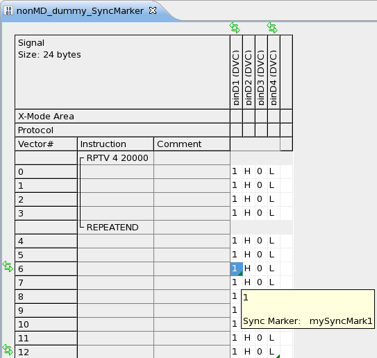

Adding synchronization markers
A sync marker is a vector attachment added to a vector of a certain pin.
About this task
The name of a sync marker must be unique throughout the test flow because it is used to identify it.
The port of the sync marker and the referenced protocol port must be in the same synchronization group.
Note It must not be placed behind or within
match loop, nor within a loop.
This task describes how to add (create) a sync marker. The pattern getting the markers attached becomes a 'control pattern'.
Before you begin
Ensure you have a pattern set up that does not use the ports of your protocol. This one will be the pattern that controls the start of the protocol transactions.
Procedure
- Open the non-protocol-port pattern (control pattern) in the pattern editor.
- Right-click the vector value of a pin.
- Click Add Sync Marker from the shortcut menu.
- Enter the sync marker's name and click OK.
Results
- You added (created) a sync marker.
- The vector lines and pins having a sync marker attached are marked with small arrows and a triangle.

What to do next
Synchronize the protocol transactions to your sync markers in your test methods as described in: Example: Using sync markers within test methods.
Functional changes
- Introduced in SmarTest 7.1.2